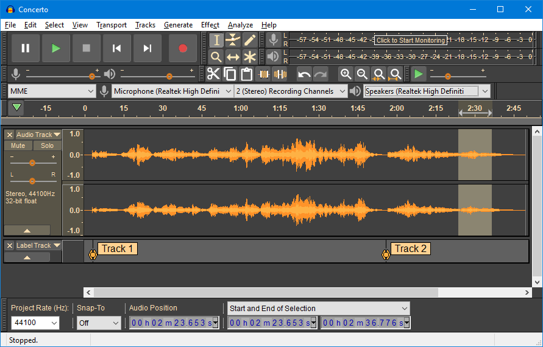

Table of contents
Audio processing
üöß This page is currently under construction üöß

Last updated: 19 July 2023
PARADISEC audio processing workflow for archiving
This workflow is targeted toward born-digital audio files or files that come to PARADISEC that have previously been digitised by another party.
PARADISEC audio standards
For further information on digital formats we accept, see Standard formats for archiving with PARADISEC.
PARADISEC can accept various audio formats (.wav, .aiff, .m4a, mp3.), although our preference is that the audio be sent to us as close to the archival standard of 96kHz, 24-bit (stereo) as possible. Once we receive files, they are transcoded, resampled and sent to our archive system where they are transformed into BWF archival .wav files, with an accompanying access .mp3 copy.
Resampling audio using Audacity
üöß This section is currently under construction üöß
Extracting audio from a video
If you want to extract the audio track from a video file, here are two way you can do this, both using software that is available for free:
Extracting a .wav file from a video file using VLC Media Player
You can download VLC’s free media player here
-
Open VLC and navigate to File in the main menu and select Convert/Stream…
-
Drag the video file you want to extract the audio from into the Convert & Stream window

-
Under “Choose Profile” select the Audio - CD from the drop-down menu. You can select Customize… if you want to alter the default .wav settings from a sample rate of 44100, bitrate 128, 2 channels.
-
Choose the destination for the output file and save it.
Extracting a .wav file from a video file using FFmpeg
If you want to retain the same audio quality as the source video:
ffmpeg -i <name_of_input_video.extension> <name_of_output_audio.extension>
Simply put:
ffmpeg -i video.mp4 audio.wav
If the original video (.avi, .mts, .mp4, .mov, etc.) has only one audio channel, or has a sampling or bit rate you want to change, take a look at the previous section on audio processing with ffmpeg.
Low-cost Options
Post-production of digitised audio and processing of born-digital audio files can be achieved using the following free programs:
-
NCH Wavepad (free)

-
Ocenaudio (free)

-
Audacity (free)

All three of these options allow you to export a stereo file at 96kHz/24bit, edit silences at the beginning or end of your audio files, boost the audio gain if the volume is too low or uneven across the two channels, or any other necessary interventions.
Additional resources
Prentice, W. and Gaustad, L. (eds.). (2017). IASA-TC03: The Safeguarding of the Audio Heritage: Ethics, Principles and Preservation Strategy, 4th edition (IASA Technical Publications IASA-TC03; Technical Committee Standards, Recommended Practices, and Strategies, p. 21). International Association of Sound Archives and Audiovisual Archives. https://www.iasa-web.org/tc03/ethics-principles-preservation-strategy.
Bradley, K. (ed.). (2009). IASA-TC04: Guidelines on the production and preservation on digital audio objects: Standards, recommended practices and strategies, 2nd edition (IASA Technical Publications IASA-TC04; Technical Committee Standards, Recommended Practices, and Strategies, p. 156). International Association of Sound and Audiovisual. https://www.iasa-web.org/tc04/audio-preservation
Schüller, D. and Häfner, A. (eds.). (2014). IASA-TC05: Handling and Storage of Audio and Video Carriers. First edition. https://www.iasa-web.org/handling-storage-tc05.
⬆️ Back to top

This work was created by Julia Colleen Miller and is licensed under a Creative Commons Attribution-NonCommercial-ShareAlike 4.0 International License.